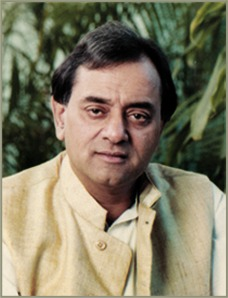
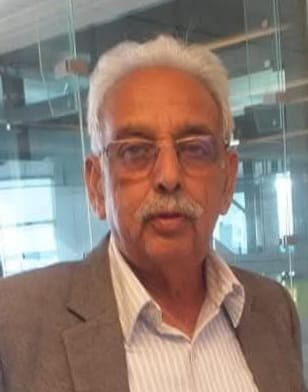

What Services Do We Provide?
The Guiding Light


What Services Do We Provide?

Our Chairman, Kamal Morarka, firmly believed that more than resources, it was the resource-management capabilities of the rural poor that required immediate intervention. Born into a traditional Marwari family, Mr. Morarka consistently strove to create social wellbeing & development. An industrialist, politician, and social worker, he embodied multiple facets, and through his initiatives with the M.R. Morarka GDC Rural Research Foundation, he was able to make a meaningful difference in the lives of villagers from some of the most backward regions of Rajasthan. Although Mr. Morarka was born and brought up in Mumbai, he visited Shekhawati frequently during his childhood, as it was the seat of important religious ceremonies in the family. The stark contrast between the backwardness of the region and the dynamism of Mumbai served as a profound reality check. His work in Shekhawati thus became his way of giving back to his roots
In essence, the efforts of Mr. Kamal Morarka and the M.R. Morarka-GDC Rural Research Foundation were extensively directed toward addressing social concerns, with a focus on creating sustainable and economically balanced solutions for rural communities. Morarka Organic foods limited was then ventured in carrying forward this philosophy and worked toward a better tomorrow.

Ms. Pragati Mundhra is a key pillar & holds a management-level position within M.R. Morarka GDC Rural Research Foundation and Morarka Organic Foods Limited., where she brings strategic direction to various rural development and sustainability initiatives. Her leadership spans industries such as organic agriculture, and microfinance, reflecting a strong commitment to both industrial excellence and social responsibility.
Taking forward the legacy of her father, Shri Kamal Morarka, she actively supports philanthropic efforts in Nawalgarh, including the development of Belabai Vidya Mandir School, and promotes community awareness and education through school outreach, pre-school education, wholesome nutrition, health, hygiene, and women empowerment and she works passionately toward realizing his vision of sustainable progress in their ancestral village and surrounding areas. Rooted in the values instilled by her father—truthfulness, resilience, and courage—she continues to uphold the principle that challenges must be faced head-on, a philosophy deeply embedded in the Morarka family ethos and one that continues to guide her path.
Mr. Madan Singh Shekhawat has over four decades of experience in finance and administration, having served as Head of Finance at Gannon Dunkerley & Co. Ltd. (1977–2019). He is currently serving as a CEO of M.R. Morarka GDC Rural Research Foundation and Morarka Organic Foods Limited, providing strategic leadership, governance, and coordination across domestic and international stakeholders. With his deep expertise in accounts, finance, and governance, Mr. Shekhawat actively facilitates the initiatives of the M.R. Morarka-GDC Rural Research Foundation while guiding the business strategy and expansion of Morarka Organic Foods Limited in domestic and global markets, contributing significantly to the organizations’ sustained growth and institutional strength.
